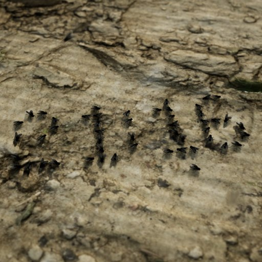
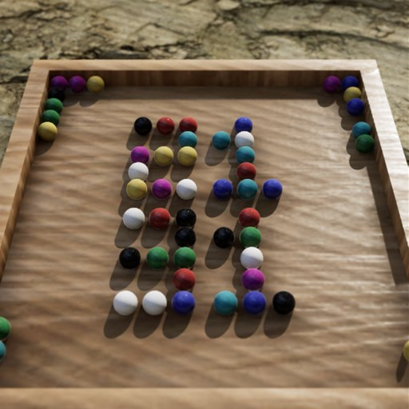
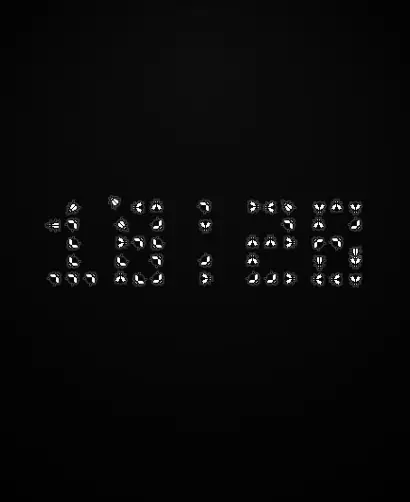

microClocks
Uhren aus Fliegen und Oxyd-Murmeln für Bangle.js 2, ESP32-S3-AMOLED, Wallpaper Engine und den PC. Quelltext · Wallpaper zum Herunterladen
ESP32-Simulator
Das Zifferblatt der Waveshare-Uhr (410 × 502) im Browser. Mit der Maus auf das Glas drücken: Fliegen fliegen auf, Murmeln kippen; ein schneller Schnipser schüttelt sie.
Bangle.js 2
Die FliesClock läuft in einer Nachbildung des 176 × 176 großen 3-Bit-Displays: Klick scheucht die Fliegen auf, die Taste S schüttelt die Uhr.
Die übrigen Bangle-Uhren öffnen im offiziellen Espruino-Emulator; dort einmal „Bangle.js 2“ wählen.
Wallpaper Engine

Fliegen 3D (Unreal Engine) – Video

Oxyd 3D (Unreal Engine): Oxyd-Steine oder Glasmurmeln

Web-Wallpaper mit denselben Zifferblättern wie der Simulator – Vorschau
Programm-Wallpapers nimmt der Steam Workshop nicht an. Die Wallpapers gibt es deshalb unter Releases: ZIP entpacken nach steamapps/common/wallpaper_engine/projects/myprojects, Wallpaper Engine neu starten und unter „Installiert“ → „Ergebnisse filtern“ den Typ „Anwendung“ einschalten.
Simulator und Vorschauen sind Nachbildungen im Browser und kein Test auf der echten Hardware.